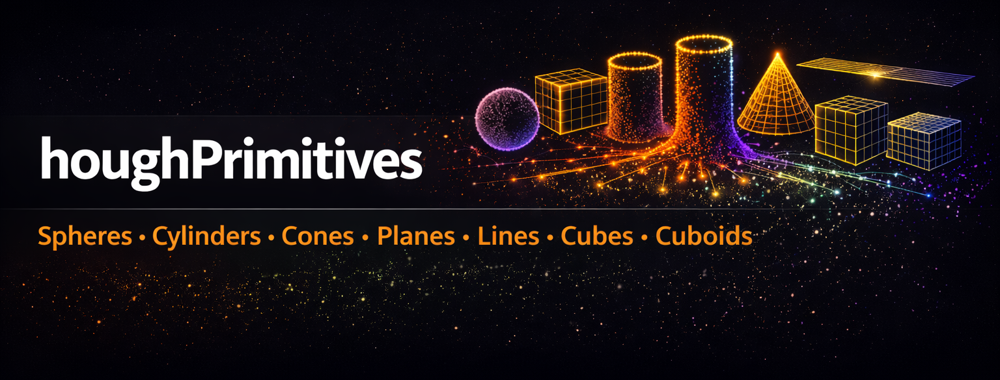
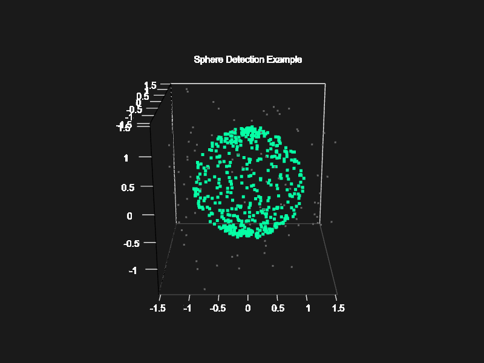
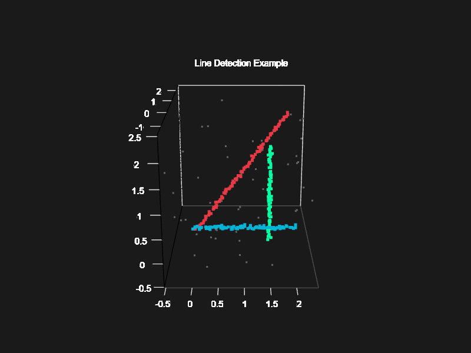
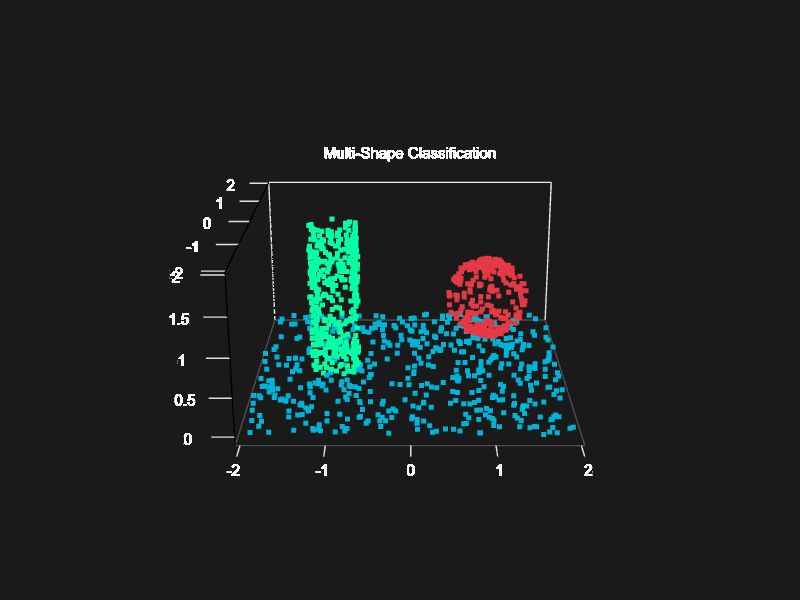

Comprehensive 3D Shape Detection for LiDAR Point Clouds using Iterative Hough Transform methods.

Overview
houghPrimitives is an R package that implements advanced 3D shape detection algorithms using Iterative Hough Transform methods. It’s specifically designed for LiDAR point cloud processing and is fully compatible with the lidR package.
Key Features
-
Multiple Shape Detection:
- Spheres: Spherical objects with 3D spatial clustering
- Cones: Traffic cones, conical markers, tapered structures
- Cylinders: Tree boles, poles, pillars with vertical/horizontal orientation
- Planes: Walls, ground surfaces, roofs using RANSAC
- Lines: 3D linear features, edges, wires using RANSAC
- Cubes: Box-shaped objects detected via orthogonal plane analysis
- Cuboids: Buildings, rectangular structures via multi-plane fitting
Point Cloud Labeling: Automatically label every point with its detected shape type and ID
lidR Integration: Seamless integration with lidR LAS objects for visualization
Optimized Performance: C++ implementation with Rcpp for fast processing
Installation
# Install from GitHub
devtools::install_github("yourusername/houghPrimitives")
# Or install from source
install.packages("houghPrimitives", repos = NULL, type = "source")Quick Start
Tree Bole Detection
library(lidR)
library(houghPrimitives)
# Load LiDAR data
las <- readLAS("forest.las")
# Detect tree boles (vertical cylinders)
trees <- detect_tree_boles(las,
min_radius = 0.1,
max_radius = 0.5,
min_height = 1.0)
# Add labels to LAS object
las$TreeID <- trees$shape_id
las$IsTree <- trees$shape_type == 4
# Visualize
plot(las, color = "TreeID")
# Get tree statistics
print(trees)Visual Examples
Sphere Detection
Detect spherical objects in 3D point clouds with precise center and radius estimation:

Sphere Detection Example
result <- detect_spheres(point_matrix,
min_radius = 0.5,
max_radius = 1.5,
min_votes = 50,
label_points = TRUE)Line Detection
Identify 3D linear features with context-aware detection modes:

Line Detection Example
result <- detect_lines(point_matrix,
distance_threshold = 0.05,
min_votes = 30,
in_scene = FALSE) # Aggressive mode for line-only scenesMulti-Shape Classification
Classify complex scenes containing multiple primitive types:

Multi-Shape Detection Example
# Detect shapes in optimal order
spheres <- detect_spheres(points, min_votes = 50, label_points = TRUE)
cylinders <- detect_cylinders(points, min_votes = 80, label_points = TRUE)
planes <- detect_planes(points, min_votes = 150, label_points = TRUE)Comprehensive Examples
Example 1: Sphere Detection
library(houghPrimitives)
library(lidR)
# See examples/example_sphere_detection.R for complete demo
# Generates synthetic spheres with noise and detects them
# Basic sphere detection
result <- detect_spheres(point_matrix,
min_radius = 0.5,
max_radius = 1.5,
min_votes = 50,
label_points = TRUE)
print(result$spheres) # Detected sphere parameters
# Visualize with lidRExample 2: Tree Detection
# See examples/example_tree_detection.R
# Detects vertical cylinders (tree boles) using multi-slice analysis
trees <- detect_tree_boles(las,
min_radius = 0.05,
max_radius = 0.5,
min_height = 1.0,
min_votes = 30)Example 3: All Shapes
# See examples/example_all_shapes.R
# Comprehensive demo detecting all primitive types:
# - Spheres
# - Cylinders
# - Cubes (via plane analysis)
# - Cuboids (buildings via plane analysis)
# - Planes
# - Lines
# Run with:
source("examples/example_all_shapes.R")Available Detection Functions
All functions accept a matrix with 3 columns (X, Y, Z) or can work with lidR LAS objects:
-
detect_spheres()- 3D sphere detection -
detect_cones()- Cone detection with configurable opening angle -
detect_cylinders()- General cylinder detection
-
detect_tree_boles()- Vertical cylinders (trees) -
detect_planes()- RANSAC plane fitting -
detect_lines()- RANSAC 3D line detection -
detect_cubes()- Cube detection via orthogonal planes -
detect_cuboids()- Rectangular box detection via planes -
summarize_points()- Basic point cloud statistics
Color Palette Functions
The package includes flexible color palette utilities for visualizing detection results:
-
hough_palette(n, type)- Get n colors from full (20) or contrast (19) palette -
hough_palette_gradient(n, type, alpha)- Interpolate n smooth colors with transparency -
hough_palette_pairs(n)- Get n contrasting foreground/background pairs -
hough_palette_preview(n, type)- Display color barplot
Quick Example:
# Color detected shapes with high-contrast palette
result <- detect_spheres(points, label_points = TRUE)
colors <- hough_palette(result$n_spheres, "contrast")
# Create smooth elevation gradient
elevation_colors <- hough_palette_gradient(100, "full")
# See PALETTE_GUIDE.md for comprehensive documentation
# See examples/example_palettes.R for usage examplesNotes on Cube/Cuboid Detection
Cubes and cuboids are detected as collections of planar faces: - Cubes require 6 orthogonal planes forming a regular box - Cuboids require 4+ planes forming rectangular structures - Detection depends on: * Point density on each face * Noise levels * Whether all faces are visible in point cloud - These functions use plane detection internally and may have variable success depending on scene complexity
Algorithm Details
Iterative Hough Transform for 3D Lines
Based on the algorithm described in: > von Gioi, R. G., Jakubowicz, J., Morel, J. M., & Randall, G. (2017). > “On Straight Line Segment Detection.” Image Processing On Line, 7, 347-354.
The method: 1. Discretizes the 3D parameter space (direction + position) 2. Votes for line parameters in accumulator array 3. Extracts peaks representing detected lines 4. Iteratively refines with least squares fitting 5. Removes detected points and repeats
Shape Type Codes
When labeling points, the following shape type codes are used:
| Code | Shape Type | Typical Use Case |
|---|---|---|
| 0 | Unknown | Unclassified points |
| 1 | Line | Power lines, edges |
| 2 | Plane | Ground, walls, roofs |
| 3 | Sphere | Spherical objects |
| 4 | Cylinder | Trees, poles |
| 5 | Cuboid | Buildings |
| 99 | Noise | Outliers |
Performance Tips
-
Subsample large datasets: Use
lidR::decimate_points()for initial testing -
Adjust parameters: Lower
min_votesfor sparse data, raise for dense clouds -
Tune resolution: Smaller
dxvalues = higher precision but slower - Filter by height: Pre-filter point clouds to relevant height ranges
- Parallel processing: Process tiles separately for large areas
References
Jeltsch, M., Dalitz, C., & Pohle-Fröhlich, R. (2016). Hough Parameter Space Regularisation for Line Detection in 3D. Proceedings of the 11th Joint Conference on Computer Vision, Imaging and Computer Graphics Theory and Applications (VISIGRAPP 2016), 4, 345-352. https://doi.org/10.5220/0005679003450352
von Gioi, R. G., Jakubowicz, J., Morel, J. M., & Randall, G. (2008). On Straight Line Segment Detection. Journal of Mathematical Imaging and Vision, 32, 313-347. https://doi.org/10.1007/s10851-008-0102-5
Camurri, M., Vezzani, R., & Cucchiara, R. (2014). 3D Hough Transform for Sphere Recognition on Point Clouds. Machine Vision and Applications, 25, 1877-1891. https://doi.org/10.1007/s00138-014-0640-3
Dalitz, C., Schramke, T., & Jeltsch, M. (2017). Iterative Hough Transform for Line Detection in 3D Point Clouds. Image Processing On Line, 7, 184-196. https://doi.org/10.5201/ipol.2017.208
Wan, H., & Zhao, F. (2024). A Hierarchical Neural Network for Point Cloud Segmentation and Geometric Primitive Fitting. Entropy, 26(9), 717. https://doi.org/10.3390/e26090717
Citation
If you use this package in your research, please cite:
@Manual{houghPrimitives,
title = {houghPrimitives: Comprehensive 3D Shape Detection for LiDAR Point Clouds},
author = {Andrew Sánchez Meador},
year = {2026},
note = {R package version 0.1.0},
url = {https://github.com/bi0m3trics/houghPrimitives}
}Or in text format:
Sánchez Meador, A. (2026). houghPrimitives: Comprehensive 3D Shape Detection for LiDAR Point Clouds. R package version 0.1.0. https://github.com/bi0m3trics/houghPrimitives
Contact
For questions, bug reports, or feature requests, please open an issue on GitHub.
Note: This package builds upon the original IPOL implementation and extends it significantly for LiDAR and forestry applications. The original line detection algorithm is described in the IPOL paper and available at: https://www.ipol.im/pub/art/2017/208/